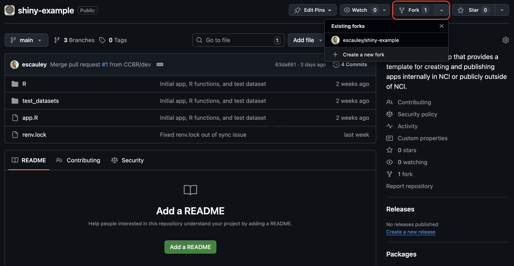
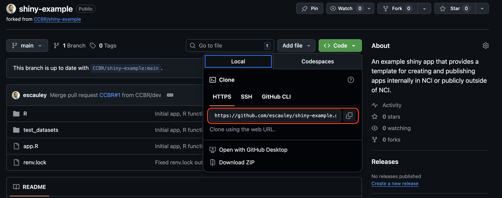
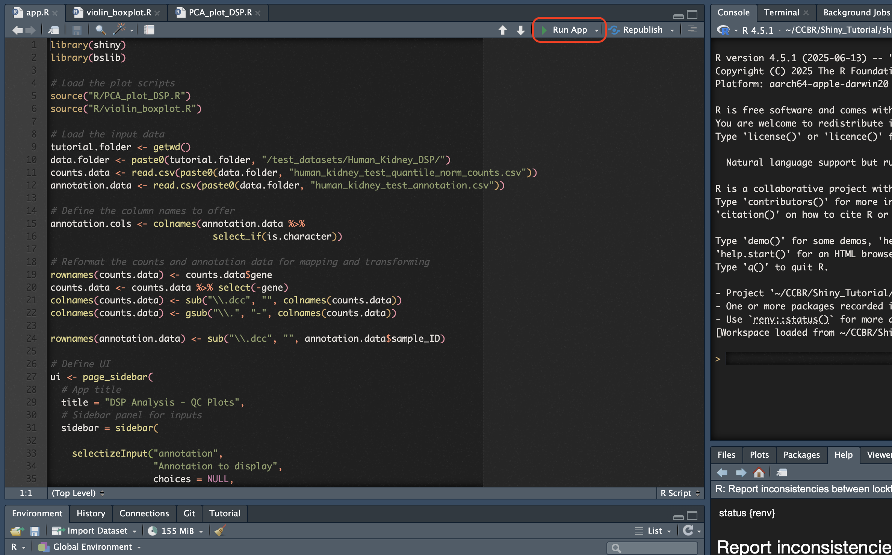

Developing Shiny Apps
Posit Resources
Posit has a free Shiny tutorial for developing shiny apps in either R or Python available on their shiny web page. The Posit tutorial will teach you the essentials of how Shiny apps are developed and how to add additional features. The Shiny web page also contains additional information for creating more complex Shiny apps, such as the the gallery which demo specific features.
Posit offers a “cheatsheet” for referencing aspects of Shiny development: Download the Shiny Cheatsheet PDF
Example Shiny App
There is an example Shiny app for CCBR members to use for learning and experimenting with an already functional app, or for use as a foundation for developing a new app.
To set up the example Shiny app for personal use, please use the following steps.
Create a fork
The first step is to fork the CCBR shiny-example github repo using the “fork” option from the CCBR shiny-example repo.

Clone the forked repo
After the fork is created, clone the fork locally using the github CLI with the URL available in the code tab of the forked repo.

The github CLI command will be:
git clone https://github.com/$gh_username/shiny-example.gitBe sure to replace $gh_username with your actual github username.
Start a new R project
Create a new R project in R studio, either in the same folder as the cloned example Shiny app repo or in a separate folder. Be sure to use renv for the new project to create a contained environment for the R libraries required for the shiny app. The renv.lock file will contain all R libraries installed in the env and is needed for deployment to the Posit Connect servers. If the project is created in a separate folder, the path of all files referenced in the example app will need to be changed to reflect the new folder destination.
The shiny-example repo comes with a renv.lock file which can be used to install all of the libraries needed for the shiny example app. To use the renv.lock file, run the command in the RStudio console:
renv::restore()If the restore function causes issues or is not preferred, the required libraries can also be installed individually. All required libraries are listed at the top of the app.R file and the sourced R script files (for shiny-example the R script files are R/PCA_plot_DSP.R and R/violin_boxplot.R).
Run the Shiny app locally
To verify all R libraries and required files are set up correctly, the example Shiny app can be run locally using the “Run App” button in R studio. Depending on the selection in the drop down menu for the Run App button, the app will either generate in a browser or in the Viewer window within R studio.


Next steps
After the example Shiny app is set up, you can proceed with making changes to the app such as new features, experiment with changing the pre-existing code of the example, etc. When you are ready to try publishing the app, please proceed to the Publishing to Dev documentation.